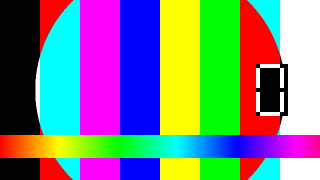

Clips/A002C001_prores422hq.mov

Clips/A003C001.R3D
Clips/A004C001.braw
SecureReel DIT 拷贝报告 · 修订 R001 · 生成于 2026-09-14T17:55:47.606Z · 主机 verify.local
| 目标 | 已写入 | 成功 | 失败 | 状态 |
|---|---|---|---|---|
| BackupA | 10.84 MB | 6 | 0 | 已校验 |
| BackupB | 10.84 MB | 6 | 0 | 已校验 |
| 项目名称 | 端到端验证 |
|---|---|
| 拍摄日 | 2026-09-14 |
| 摄影机 | ALEXA 35 |
| 卡号 / 卷号 | A002 |
| 职务 | 所属人 |
|---|---|
| DIT | 张三 |
| 摄影助理 | 李四 |
| 相对路径 | 大小 | 状态 | 校验值（源侧读取时计算） |
|---|---|---|---|
| Sidecar.txt | 16 B | 已校验 | d335175550f1c897 |
| Audio/A002_001.wav | 18 B | 已校验 | b43741a2826a130d |
| Clips/A002C001_prores422hq.mov | 979.97 KB | 已校验 | 0356fc932893f6e7 |
| Clips/A003C001.R3D | 580.16 KB | 已校验 | 8f5609f3c9d440b6 |
| Clips/A004C001.braw | 324.16 KB | 已校验 | c9c736863bb59587 |
| Clips/big_generic.mov | 9.00 MB | 已校验 | 4da80054195ada3d |
每张图是该条素材的第一帧。下方标注了画面来源： 「解码」表示由 FFmpeg 实际解码得到；「内嵌预览」表示该格式为厂商私有编码、 FFmpeg 无法解码，画面取自摄影机写在文件内部的预览图，分辨率通常低于实际记录分辨率。

| 文件 | 格式 | 分辨率 | 帧率 | 时长 | 时码 | 拍摄时间 | 首帧来源 |
|---|---|---|---|---|---|---|---|
| Clips/A002C001_prores422hq.mov | ProRes 422 HQ | 640×360 | 25 fps | 00:00:01 | — | — | 解码 |
| Clips/A003C001.R3D | R3D（REDCODE RAW） | 512×288 | — | — | — | — | 内嵌预览 |
| Clips/A004C001.braw | BRAW（Blackmagic RAW） | 512×288 | — | — | — | — | 内嵌预览 |